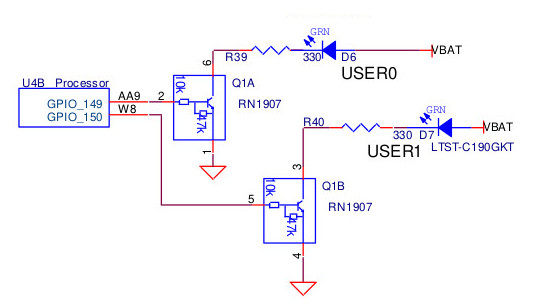
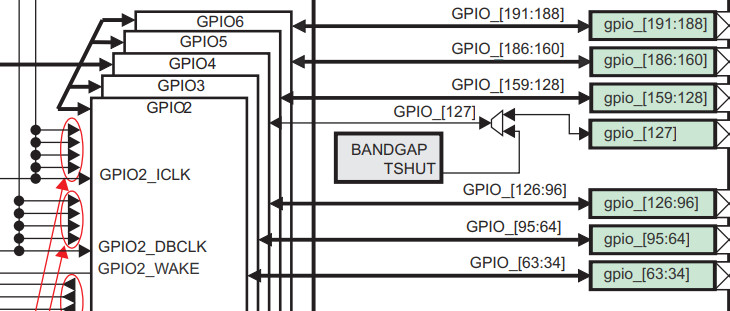
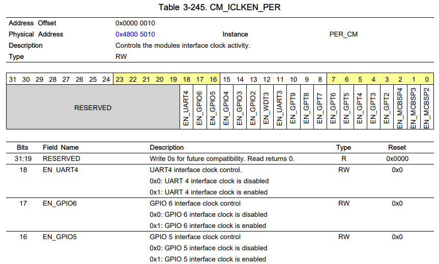
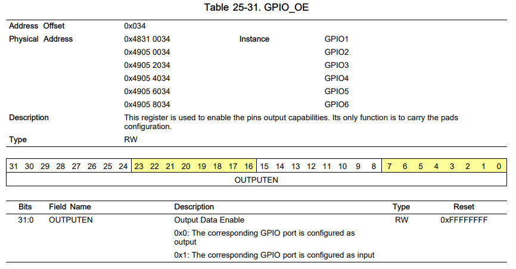
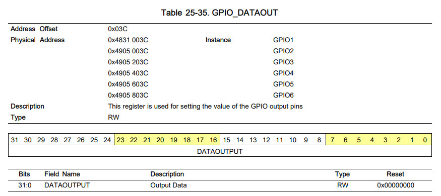
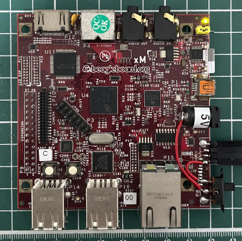
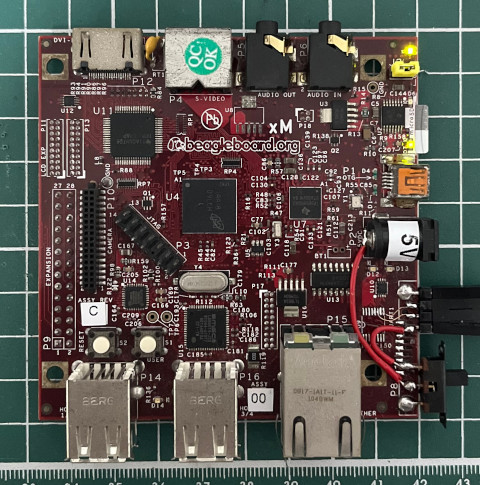

LED D6是連接到GPIO-149





.global _start
.equ CM_ICLKEN_PER, 0x48005010
.equ GPIO5_OE, 0x49056034
.equ GPIO5_DATAOUT, 0x4905603c
.arm
.text
_start:
b reset
b .
b .
b .
b .
b .
b .
b .
reset:
ldr r0, =CM_ICLKEN_PER
ldr r1, =(1 << 16)
str r1, [r0]
ldr r0, =GPIO5_OE
ldr r1, =0
str r1, [r0]
ldr r0, =GPIO5_DATAOUT
ldr r1, =(1 << 21)
str r1, [r0]
ldr r2, =0x00000000
0:
eor r2, r1
str r2, [r0]
ldr r3, =100000000
1:
subs r3, #1
bne 1b
b 0b
.end
main.ld
MEMORY
{
RAM : ORIGIN = 0, LENGTH = 32M
}
SECTIONS
{
.text : { *(.text*) } > RAM
.data : { *(.data*) } > RAM
}
Makefile
all: arm-linux-gnueabihf-as -mcpu=cortex-a7 -o main.o main.s arm-linux-gnueabihf-ld -T main.ld -o main.elf main.o arm-linux-gnueabihf-objcopy -O binary main.elf u-boot.img clean: rm -rf u-boot.img main.o main.elf
編譯
$ make
arm-linux-gnueabihf-as -mcpu=cortex-a7 -o main.o main.s
arm-linux-gnueabihf-ld -T main.ld -o main.elf main.o
arm-linux-gnueabihf-objcopy -O binary main.elf u-boot.img
複製u-boot.img到MicroSD根目錄，接著開啟電源即可

